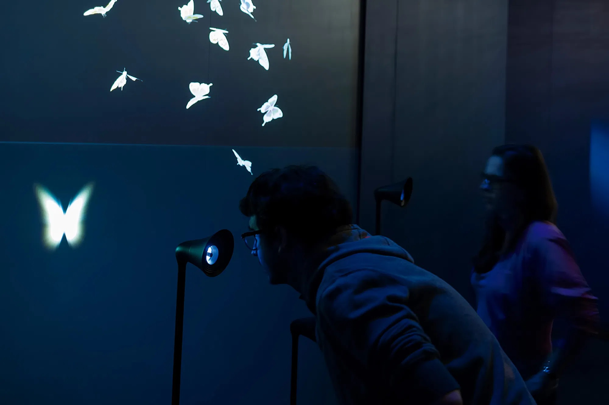
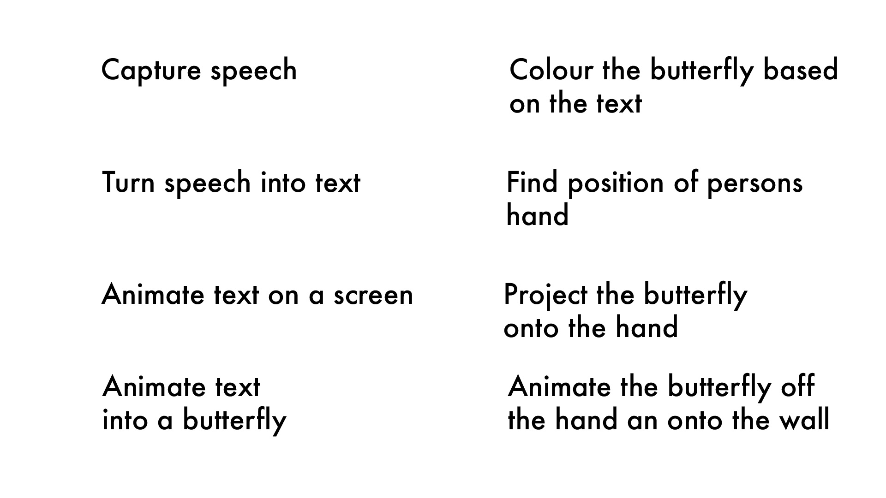
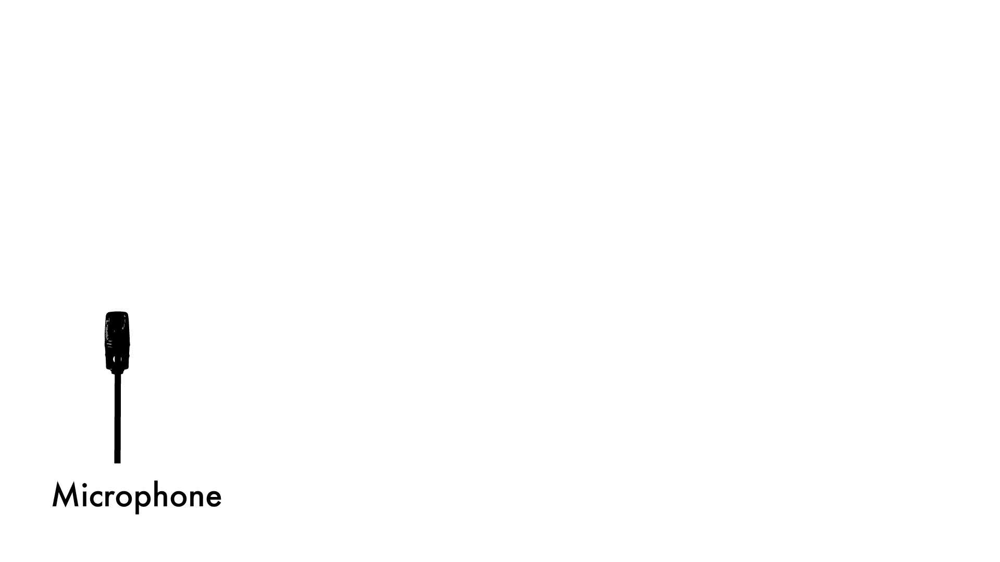
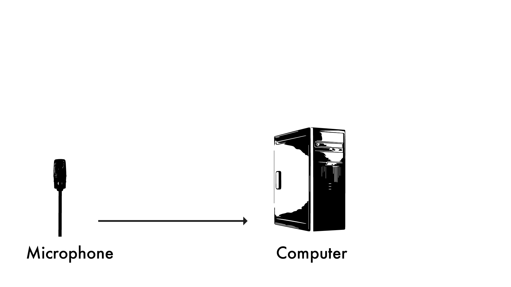
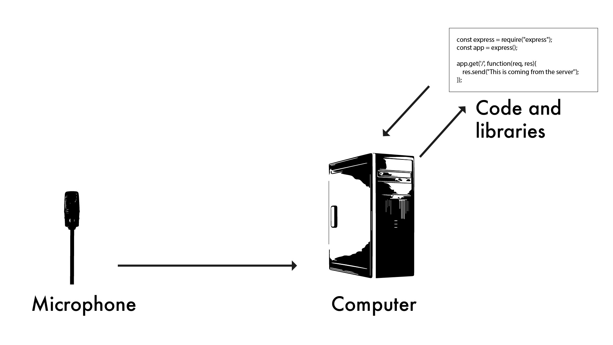
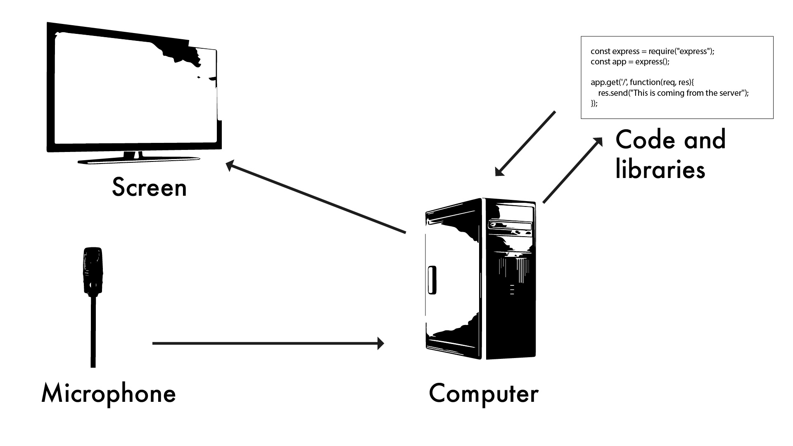
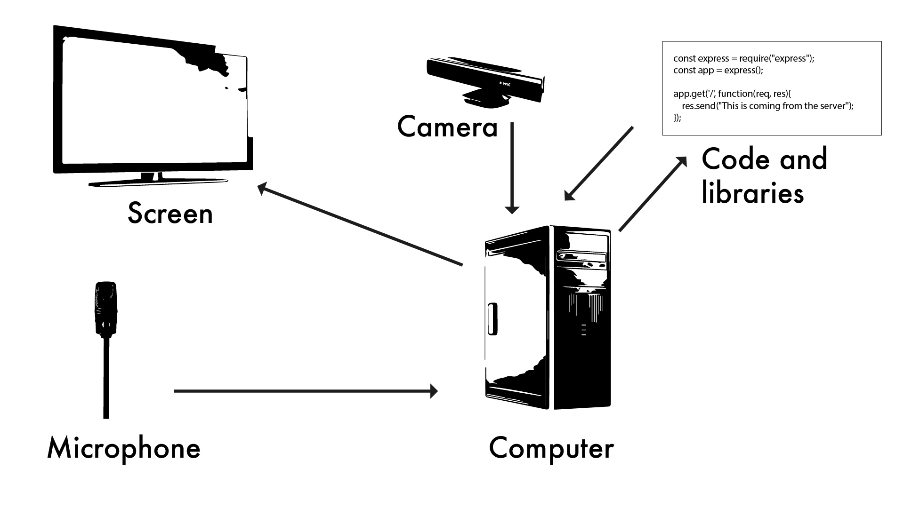
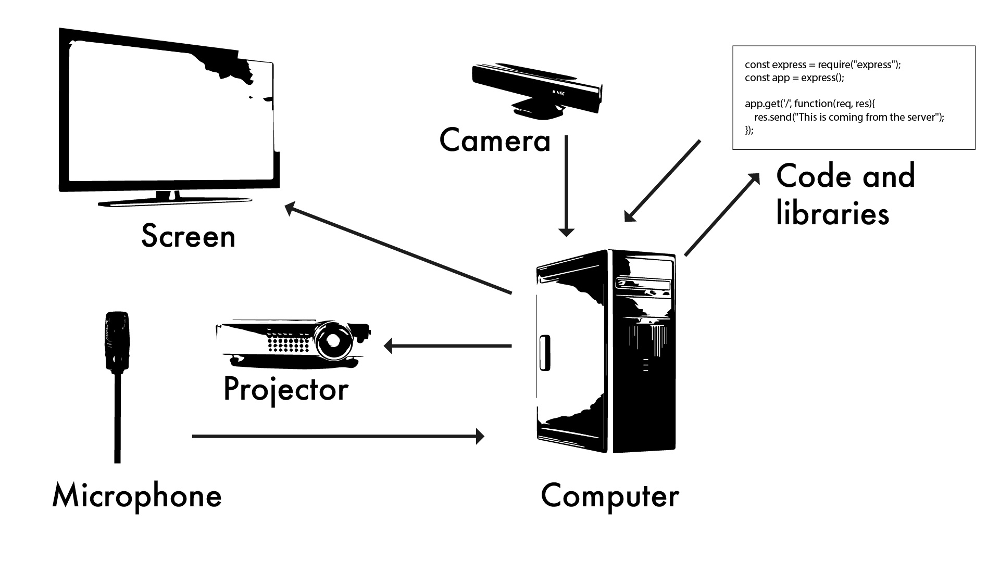
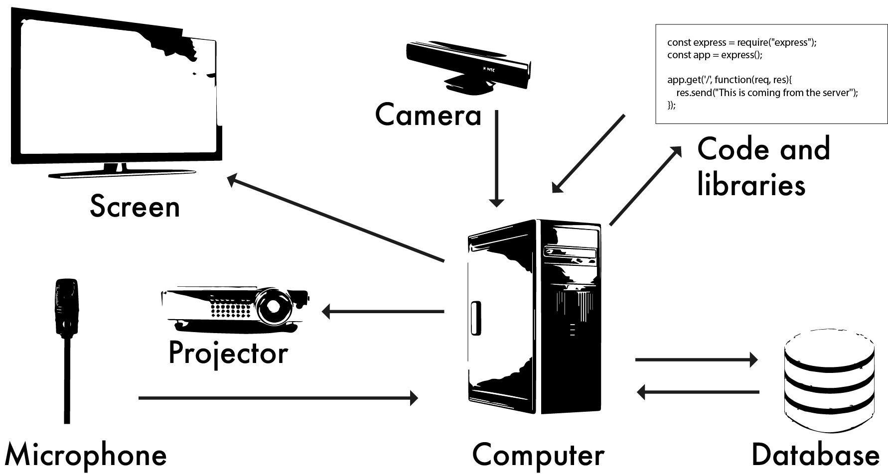
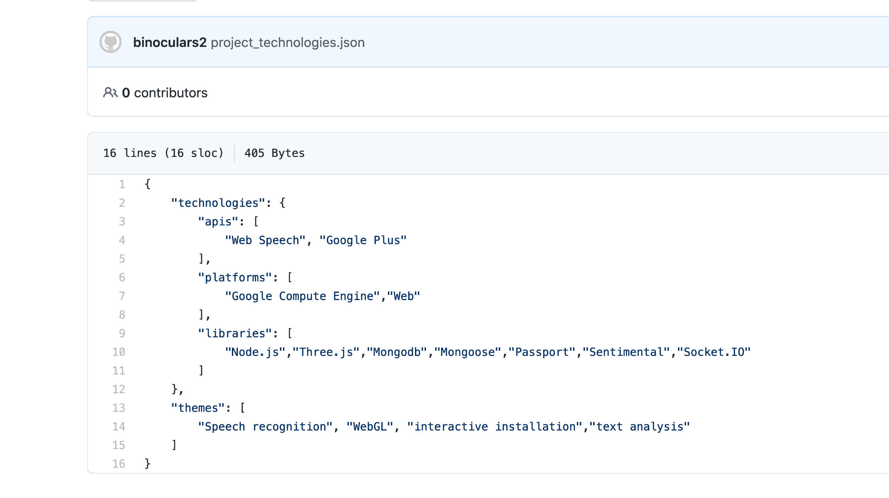

REVERSE ENGINEERING WISHING WALL
In this video I am going to look at a physical computing project and try and work out how it was made. This is called reverse engineering and can be used to work out how software or hardware projects are made.

The project I picked is one I showed in a previous workshop, it's called the wishing wall and was made by Varvara and Mar for the Digital Revolution exhibition that was shown in Istanbul, Athens, Stockholm and London. It was commissioned by Google and Barbican Centre for the exhibition.
I’m first going to break down the elements of the project, then without researching how they did it, work out how I would make it. Once I’ve done that, I will do some research on how they did it and go through that.
In it you speak into a microphone, what you say is shown as text on a screen, it then animates into a butterfly, the color of the butterfly will depend on what you said, for example a positive message will be a certain colour. If you put your hand close to the butterfly you will see the butterfly on your hand before it flies around the screen

So, I need to break this down into the steps needed to do this:
A way to capture what someone says
A way to turn that into text and animate that text onto a screen
Animate the text into a butterfly
Choose a color for the butterfly based on the on the mood of the text
Find out where the hand is in relation to the screen and butterfly
Project the butterfly onto the hand
After a period of time have the butterfly leave the hand and fly up the wall
So, then I can start to sketch out what I will need for this installation,
There needs to be a way to capture what someone says

A microphone
And there is a surround around it so it fits with the mood of the piece
Record the words from the microphone on a computer

Turn the speech into digital text
I will need software to do this so will need to connect the microphone to a computer
It would be some sort of natural language processor to convert the speech to text, so I would need external libraries

Turn the text into digital words that can animate onto a screen
I would need a screen to display the animation
Software for the screen that can display the animation
Choose the color of the butterfly based on the mood of the text
I would need to process the text through some sort of Sentiment analysis software
Find out the where the hand is in relation to the screen

Need some sort of computer vision system, software and hardware
Maybe something like a Kinect for the hardware

Some sort of AI software that can recognize hands

A projector to project the butterfly onto the persons hand

A projector to project the butterfly onto the persons hand

A projector to project the butterfly onto the persons hand